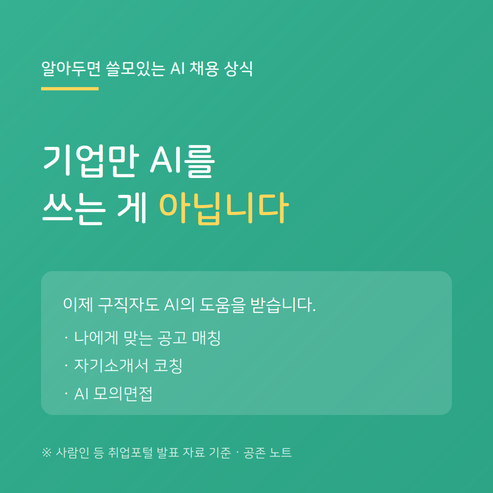

지금까지 AI 채용은 '기업이 구직자를 평가하는 도구'였습니다. 그런데 최근 흐름은 조금 다릅니다. 이제 구직자도 AI의 도움을 받습니다.
사람인 등 주요 취업포털이 최근 선보인 서비스를 보면, AI와 대화하며 나에게 맞는 공고를 찾고, 직무 매칭률·자격 요건 충족도를 평가받습니다. 자기소개서 작성 코칭을 받고, AI 면접관과 실전처럼 모의면접까지 해볼 수 있습니다. (사람인 등 취업포털 발표 자료 기준)
핵심은, AI 채용이 '평가받는 쪽'만의 이야기가 아니게 됐다는 점입니다. 같은 기술이 구직자의 준비 도구로도 열리고 있습니다.
다만 주의할 점이 있습니다. AI 코칭이 만들어준 '평균적으로 잘 쓴' 자소서는, 기업의 AI가 걸러내려는 바로 그 대상이기도 합니다. 도구는 활용하되, 마지막 진정성은 본인의 몫으로 남겨두는 것이 안전합니다.
공존 노트는, AI를 남들보다 잘 쓰는 요령보다 그 도구가 나를 어떻게 바꾸는지 아는 것이 먼저라고 봅니다.
---
※ 인용 내용은 사람인 등 취업포털의 발표 자료에 근거하며, 서비스 구성은 포털·시기에 따라 다를 수 있습니다.
공존 노트 · AI가 당신을 평가하는 시대, 구직자를 위한 안내서